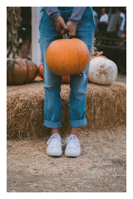

| O nas
Nasza farma
To niezapomniana przygoda jak dla dzieci tak i dla dorosłych. Prowadzimy wycieczkę edukacyjno-poznawczą, gdzie dzieci na żywo poznają: zasady uprawy warzyw, będą mogli wejść na pole dyniowe i pozbierać dynie, zobaczyć, pogłaskać i nakarmić
niektóre zwierząt gospodarskie. Zapraszamy na naszą farmę na niezapomnianą wyczieczkę.